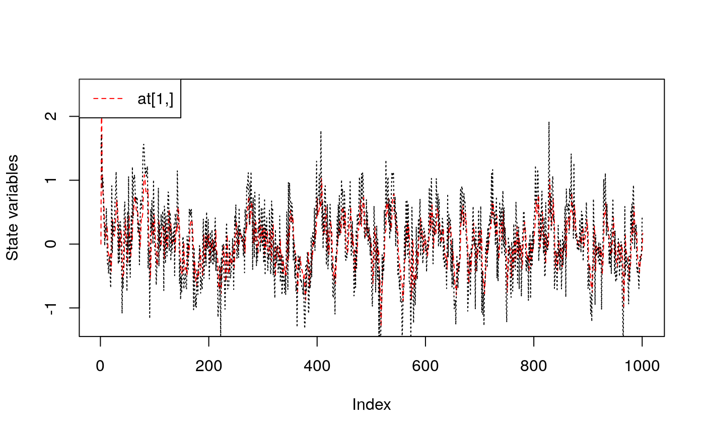
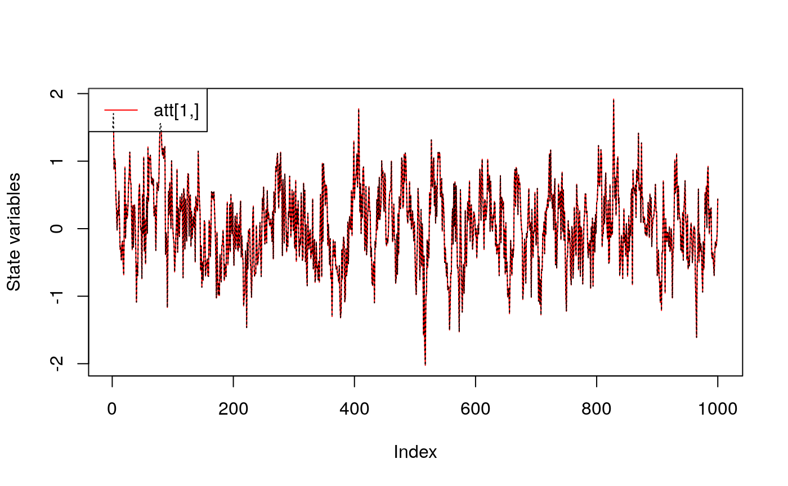
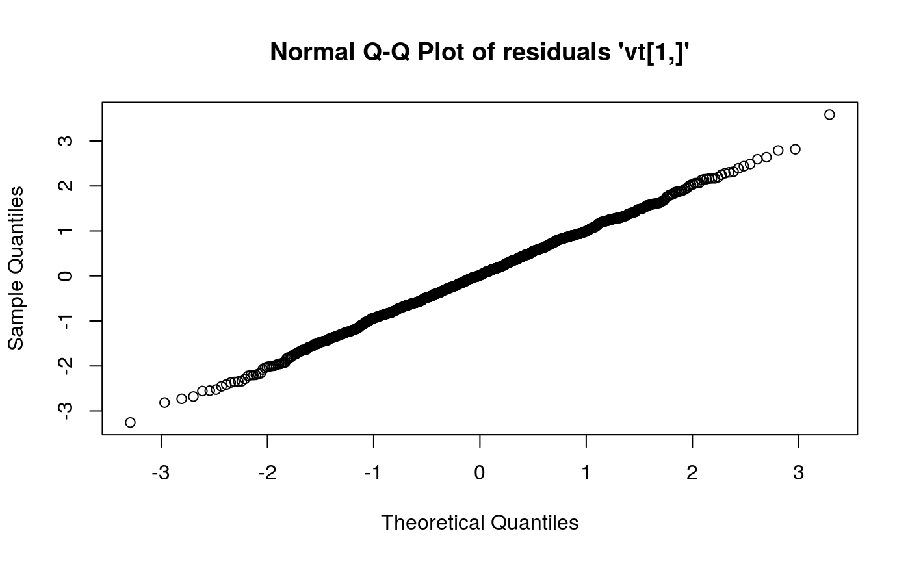
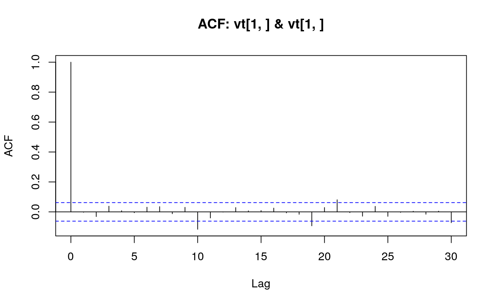
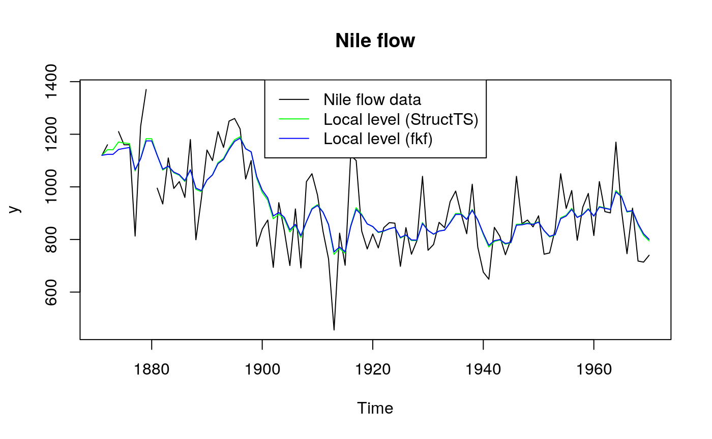
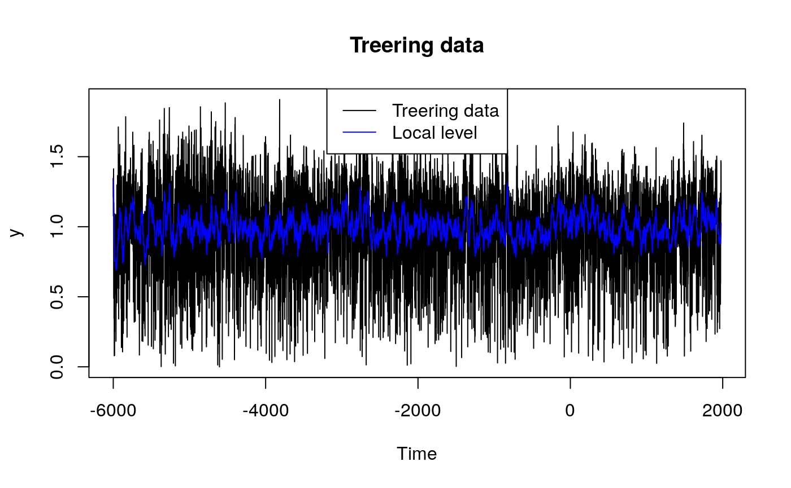
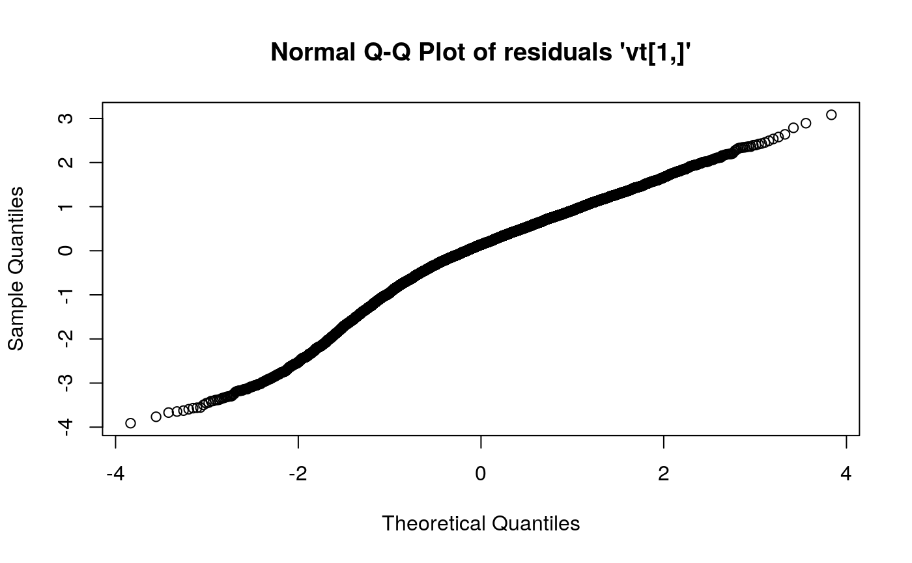
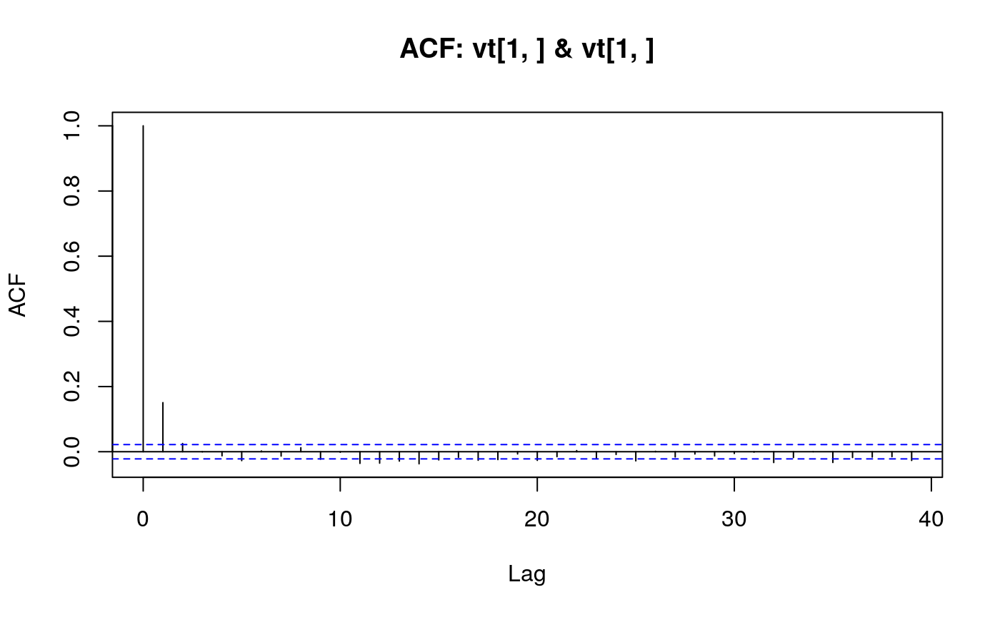

This example shows how to fit an ARMA(2, 1) model using this Kalman filter implementation (see also stats’ makeARIMA and KalmanRun).
Set the length of the series and parameters
Sample from an ARMA(2, 1) process
Create a state space representation out of the four ARMA parameters
arma21ss <- function(ar1, ar2, ma1, sigma) {
Tt <- matrix(c(ar1, ar2, 1, 0), ncol = 2)
Zt <- matrix(c(1, 0), ncol = 2)
ct <- matrix(0)
dt <- matrix(0, nrow = 2)
GGt <- matrix(0)
H <- matrix(c(1, ma1), nrow = 2) * sigma
HHt <- H %*% t(H)
a0 <- c(0, 0)
P0 <- matrix(1e6, nrow = 2, ncol = 2)
return(list(a0 = a0, P0 = P0, ct = ct, dt = dt, Zt = Zt, Tt = Tt, GGt = GGt,
HHt = HHt))
}The objective function passed to ‘optim’
objective <- function(theta, yt) {
sp <- arma21ss(theta["ar1"], theta["ar2"], theta["ma1"], theta["sigma"])
ans <- fkf(a0 = sp$a0, P0 = sp$P0, dt = sp$dt, ct = sp$ct, Tt = sp$Tt,
Zt = sp$Zt, HHt = sp$HHt, GGt = sp$GGt, yt = yt)
return(-ans$logLik)
}
theta <- c(ar = c(0, 0), ma1 = 0, sigma = 1)
fit <- optim(theta, objective, yt = rbind(a), hessian = TRUE)
fit
#> $par
#> ar1 ar2 ma1 sigma
#> 0.6206253 0.1468106 -0.1885700 0.4380104
#>
#> $value
#> [1] 600.6374
#>
#> $counts
#> function gradient
#> 241 NA
#>
#> $convergence
#> [1] 0
#>
#> $message
#> NULL
#>
#> $hessian
#> ar1 ar2 ma1 sigma
#> ar1 2254.3394184 1660.9892409 1136.3851046 -0.6675176
#> ar2 1660.9892409 2254.2865369 259.9051193 -0.1794079
#> ma1 1136.3851046 259.9051193 1010.4290607 -0.4779895
#> sigma -0.6675176 -0.1794079 -0.4779895 10414.0269266## Confidence intervals
rbind(fit$par - qnorm(0.975) * sqrt(diag(solve(fit$hessian))),
fit$par + qnorm(0.975) * sqrt(diag(solve(fit$hessian))))
#> ar1 ar2 ma1 sigma
#> [1,] 0.4416353 0.02723229 -0.37207043 0.4188043
#> [2,] 0.7996154 0.26638894 -0.00506959 0.4572165
## Filter the series with estimated parameter values
sp <- arma21ss(fit$par["ar1"], fit$par["ar2"], fit$par["ma1"], fit$par["sigma"])
ans <- fkf(a0 = sp$a0, P0 = sp$P0, dt = sp$dt, ct = sp$ct, Tt = sp$Tt,
Zt = sp$Zt, HHt = sp$HHt, GGt = sp$GGt, yt = rbind(a))
## Compare the prediction with the realization
plot(ans, at.idx = 1, att.idx = NA, CI = NA)
lines(a, lty = "dotted")
## Compare the filtered series with the realization
plot(ans, at.idx = NA, att.idx = 1, CI = NA)
lines(a, lty = "dotted")


## Transition equation:
## alpha[t+1] = alpha[t] + eta[t], eta[t] ~ N(0, HHt)
## Measurement equation:
## y[t] = alpha[t] + eps[t], eps[t] ~ N(0, GGt)
y <- Nile
y[c(3, 10)] <- NA # NA values can be handled
## Set constant parameters:
dt <- ct <- matrix(0)
Zt <- Tt <- matrix(1)
a0 <- y[1] # Estimation of the first year flow
P0 <- matrix(100) # Variance of 'a0'
## Estimate parameters:
fit.fkf <- optim(c(HHt = var(y, na.rm = TRUE) * .5,
GGt = var(y, na.rm = TRUE) * .5),
fn = function(par, ...)
-fkf(HHt = matrix(par[1]), GGt = matrix(par[2]), ...)$logLik,
yt = rbind(y), a0 = a0, P0 = P0, dt = dt, ct = ct,
Zt = Zt, Tt = Tt, check.input = FALSE)
## Filter Nile data with estimated parameters:
fkf.obj <- fkf(a0, P0, dt, ct, Tt, Zt, HHt = matrix(fit.fkf$par[1]),
GGt = matrix(fit.fkf$par[2]), yt = rbind(y))
## Compare with the stats' structural time series implementation:
fit.stats <- StructTS(y, type = "level")
fit.fkf$par
#> HHt GGt
#> 1385.066 15124.131
fit.stats$coef
#> level epsilon
#> 1599.452 14904.781
## Plot the flow data together with fitted local levels:
plot(y, main = "Nile flow")
lines(fitted(fit.stats), col = "green")
lines(ts(fkf.obj$att[1, ], start = start(y), frequency = frequency(y)), col = "blue")
legend("top", c("Nile flow data", "Local level (StructTS)", "Local level (fkf)"),
col = c("black", "green", "blue"), lty = 1)
## Local level model for the treering width data.
## Transition equation:
## alpha[t+1] = alpha[t] + eta[t], eta[t] ~ N(0, HHt)
## Measurement equation:
## y[t] = alpha[t] + eps[t], eps[t] ~ N(0, GGt)
y <- treering
y[c(3, 10)] <- NA # NA values can be handled
## Set constant parameters:
dt <- ct <- matrix(0)
Zt <- Tt <- matrix(1)
a0 <- y[1] # Estimation of the first width
P0 <- matrix(100) # Variance of 'a0'
## Estimate parameters:
fit.fkf <- optim(c(HHt = var(y, na.rm = TRUE) * .5,
GGt = var(y, na.rm = TRUE) * .5),
fn = function(par, ...)
-fkf(HHt = matrix(par[1]), GGt = matrix(par[2]), ...)$logLik,
yt = rbind(y), a0 = a0, P0 = P0, dt = dt, ct = ct,
Zt = Zt, Tt = Tt, check.input = FALSE)
## Filter Nile data with estimated parameters:
fkf.obj <- fkf(a0, P0, dt, ct, Tt, Zt, HHt = matrix(fit.fkf$par[1]),
GGt = matrix(fit.fkf$par[2]), yt = rbind(y))
## Plot the width together with fitted local levels:
plot(y, main = "Treering data")
lines(ts(fkf.obj$att[1, ], start = start(y), frequency = frequency(y)), col = "blue")
legend("top", c("Treering data", "Local level"), col = c("black", "blue"), lty = 1)

